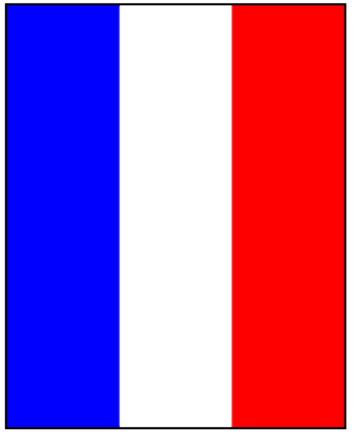

This program should draw the French flag. The left third of the canvas is blue, the middle
third is white, and the right third is red. You will need to use Rectangle objects in this program.
這個程序應該借鑒法國國旗。畫布的左邊第三個是藍色的，中間三分之一是白色的，右邊第三個是紅色的。你將需要使用矩形對象這一計劃。
